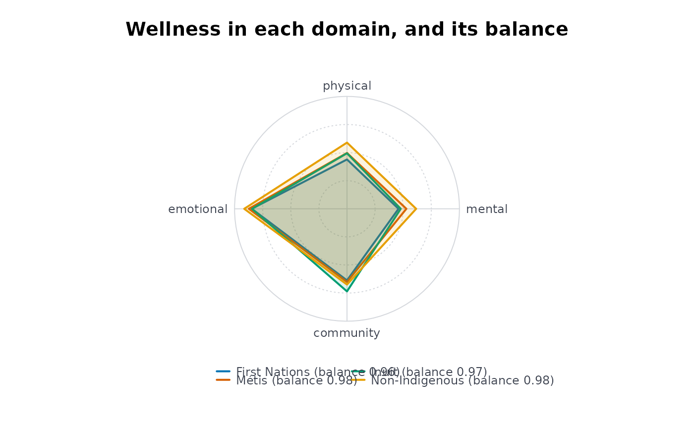

Holistic balance: how evenly wellness is held across the domains of a whole person
Source:R/indigenous_mental_health.R
holbal.RdFor each group, from published percentages of wellness in each holistic domain (physical, emotional, mental, spiritual, or the domains a community names), the overall level of wellness and how balanced it is across the domains, with Monte Carlo intervals from the published ones.
Usage
holbal(
data,
grp,
domain,
est,
lower,
upper,
w = NULL,
qual = NULL,
reps = 10000,
seed = 1,
conflvl = 0.95
)Arguments
- data
A data frame, one row per group and indicator (as
scestsgives).- grp, domain, est, lower, upper
Column names: the group, the domain of the indicator (any set of domains: Medicine Wheel, Te Whare Tapa Wha, a Nation's own), the percentage of wellness (0 to 100, strictly inside; multiply proportions by 100) and its published limits.
- w
Optional named weights, one per domain (they are rescaled to sum to one).
- qual
Optional column of quality flags.
- reps
Monte Carlo draws for the intervals (default 10,000).
- seed
Seed for the draws, so the intervals are reproducible (default 1).
- conflvl
Confidence level (default 0.95).
Value
A data frame of class rmbl_holistic_balance: group, level,
lvllo, lvlup, balance, ballo,
balup, weadom, usewithcau; the attributes
domains (the matrix of domain levels, groups by domains) and weights.
Details
Indigenous understandings of mental health are holistic: wellness is a balance
among the domains of a person, and illness a loss of that balance (Stewart 2008;
Gabriel, Mirza and Stewart 2022). A single indicator, or an average of indicators,
cannot show balance: a group with 80\
same average as one with 50\
that work rather than taken from it, measures balance as the ratio of the weighted
geometric to the weighted arithmetic mean of the domain levels \(p_k\):
$$B = \exp\left(\sum_k w_k \log p_k\right) / \sum_k w_k p_k,$$
one less Atkinson's (1970) index with inequality aversion 1. \(B = 1\) exactly when
every domain with a positive weight is at the same level, and it falls toward 0 as one
domain falls behind the others; it does not depend on the overall level, which is
reported beside it (level, \(\sum_k w_k p_k\)) with the weakest domain.
The weights w say how much each domain counts. They are equal by default;
a community that holds its own view of the domains sets its own (the CARE principle of
authority to control, Carroll et al. 2020), and the result says which weights it used.
Several indicators in one domain are averaged, their standard errors combined as
independent (they come from the same respondents, so that standard error is too
small). The interval for \(B\) comes from reps draws of every domain level
from a normal distribution on the logit scale with the standard error of its published
interval, the domains independent. \(B\) is at most 1 and reaches 1 only at equal
levels, so noise in the levels tends to pull the draws below \(\hat B\) (\(B\) is
not concave; the direction of the bias is seen in the draws, not guaranteed): the
percentile interval is shifted back by the draws' mean bias (\(\bar B^* - \hat B\)),
kept inside \((0, 1]\) and widened if need be to contain \(\hat B\). The level's
interval is normal. A group with a suppressed or missing domain, or one whose
published interval misses its own estimate, has no balance: the domain is not imputed.
What the domains mean, and which indicators stand for each, is for the communities to say; the published tables have few measures of spiritual wellness, and a domain with no fitting indicator should be left out rather than filled with another.
Acknowledgement
This estimator puts to quantitative use the framework of Professor Suzanne Stewart (Yellowknives Dene First Nation, University of Toronto).
See the acknowledgements of the first-nations-metis-inuit-health vignette.
References
Atkinson AB (1970). On the measurement of inequality. Journal of Economic Theory 2(3):244-263. doi:10.1016/0022-0531(70)90039-6
Carroll SR, Garba I, Figueroa-Rodriguez OL, et al. (2020). The CARE Principles for Indigenous Data Governance. Data Science Journal 19:43. doi:10.5334/dsj-2020-043
Gabriel MD, Mirza S, Stewart SL (2022). Exploring mental health and holistic healing through the life stories of Indigenous youth who have experienced homelessness. International Journal of Environmental Research and Public Health 19(20):13402. doi:10.3390/ijerph192013402
Stewart SL (2008). Promoting Indigenous mental health: cultural perspectives on healing from Native counsellors in Canada. International Journal of Health Promotion and Education 46(2):49-56. doi:10.1080/14635240.2008.10708129
Examples
# four domains from table 13-10-0924-01, 2019/2022, adults: which indicator stands for
# each is a choice for the people whose data these are; this is one reading of it
h <- indiex("health")
dom <- c("Perceived health, very good or excellent" = "physical",
"Perceived mental health, very good or excellent" = "mental",
"Life satisfaction, satisfied or very satisfied" = "emotional",
"Sense of belonging to local community, somewhat strong or very strong" =
"community")
d <- h[h$period == "2019/2022" & h$age == "Total, 18 years and over" &
h$indicator %in% names(dom), ]
d$domain <- dom[d$indicator]
hb <- holbal(d, "group", "domain", "estimate", "lower", "upper",
qual = "quality")
hb
#> group level lvllo lvlup balance ballo balup
#> 1 First Nations 59.525 58.25190 60.79810 0.9641371 0.9582021 0.9696524
#> 2 Métis 63.725 62.43592 65.01408 0.9751839 0.9707913 0.9791662
#> 3 Inuit 63.800 60.74133 66.85867 0.9699605 0.9562503 0.9812743
#> 4 Non-Indigenous 69.800 69.60196 69.99804 0.9846768 0.9842679 0.9850811
#> weadom usewithcau
#> 1 physical FALSE
#> 2 physical FALSE
#> 3 mental FALSE
#> 4 physical FALSE
plot(hb)

# a community that counts belonging twice
holbal(d, "group", "domain", "estimate", "lower", "upper",
qual = "quality",
w = c(physical = 1, mental = 1, emotional = 1, community = 2))
#> group level lvllo lvlup balance ballo balup weadom
#> 1 First Nations 60.36 58.96544 61.75456 0.9708435 0.9658284 0.9754471 physical
#> 2 Métis 64.00 62.58427 65.41573 0.9800615 0.9764697 0.9833027 physical
#> 3 Inuit 65.74 62.40297 69.07703 0.9742884 0.9622099 0.9841958 mental
#> 4 Non-Indigenous 69.32 69.09774 69.54226 0.9876265 0.9873029 0.9879493 physical
#> usewithcau
#> 1 FALSE
#> 2 FALSE
#> 3 FALSE
#> 4 FALSE